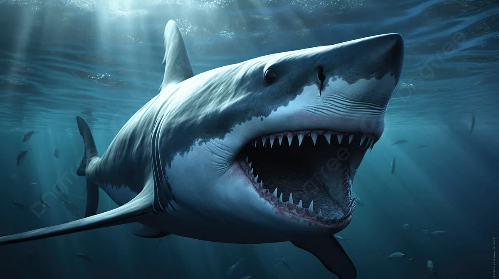
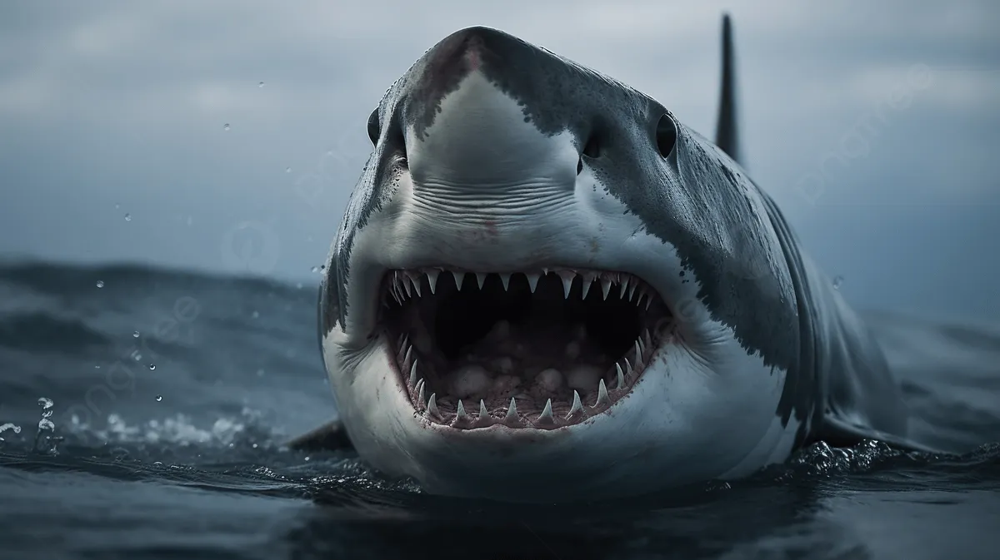

動物の説明
サメの体は主に軟骨で構成されており、硬い骨がない分、水中で非常に俊敏に動くことができます。
皮膚は“皮歯（placoid scales）”と呼ばれる細かな鱗で覆われており、触れると紙やすりのようにざらついています。
えらは魚類と同様、水中から酸素を取り込む呼吸器官で、泳ぎながら効率よく呼吸する仕組みを持っています。
また、尾びれの形状は種類によって異なり、それぞれが強い推進力を得るために進化したものとなっています。

伝説
メガロドン
メガロドンは約2300万〜360万年前に地球の海を支配していた、史上最大級のサメでございます（すでに絶滅）。
名称はギリシャ語の mega（巨大） と odon（歯）に由来し、「巨大な歯を持つもの」という意味をしております。

類似種
ホホジロザメ
ホホジロザメは世界最大級の肉食性のサメであり、海の食物連鎖の頂点に立つ存在です。
その大きな体、鋭い歯、卓越した狩りの能力で広く知られています。